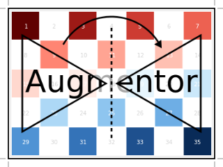

CropSize: Crop centered window
Augmentor.CropSize — Type.CropSize <: Augmentor.ImageOperationDescription
Crops out the area of the specified pixel size around the center of the input image.
For example the operation CropSize(10, 50) would denote a crop for a rectangle of height 10 and width 50 around the center of the input image.
Usage
CropSize(size)
CropSize(size...)Arguments
size:NTupleorVarargofIntthat denote the output size in pixel for each dimension.
See also
CropRatio, Crop, CropNative, augment
Examples
using Augmentor
img = testpattern()
# cropped around center of rotated image
augment(img, Rotate(45) |> CropSize(300, 400))| Input | Output for CropSize(45, 225) |
|---|---|
|  |